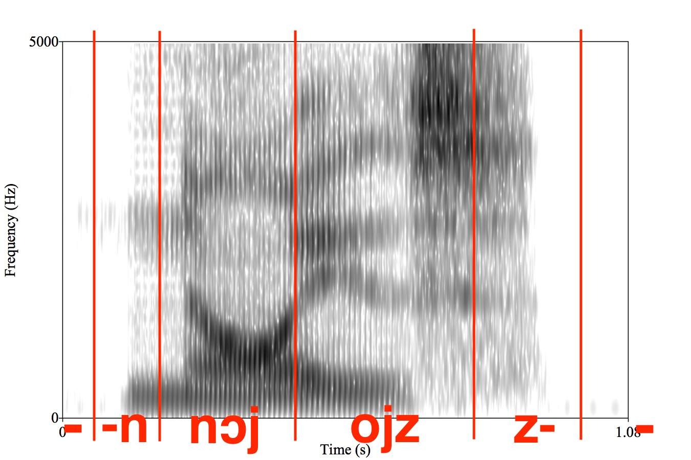

# Legacy Approaches to ASR ### Will Styler - LIGN 168 --- ### ASR has come a long way - When I started computing, it was hilariously bad - Not usable for nearly any task - Then, it was expensive and bad - 'Dragon Dictate' era - Then, it was expensive and usable-ish - This is today's topic - Then, everything changed - Neural methods won --- ### Today's Plan - Why teach legacy methods? - Training Data for Legacy ASR - Levels of Granularity - Hidden Markov Models for ASR - Language Models and Hypothesis Testing --- ## Why bother with legacy methods? --- ### Everything I'm teaching today is obselete - Neural Network approaches have won, completely - In terms of every accuracy metric, they are strictly better - No high-resource ASR model is being developed as we're discussing today - The pipeline is actually much simpler now in implementation - This is not how your phone or computer does ASR - **Why do we still care?** --- ### 'There ain't no such thing as a free lunch' (TANSTAAFL) - Popularized by Robert Heinlein's *The Moon is a Harsh Mistress* - Turned into the '[No Free Lunch Theorem](https://en.wikipedia.org/wiki/No_free_lunch_theorem)' for Machine Learning by Wolpert and Macready - "Any two optimization algorithms are equivalent when their performance is averaged across all possible problems" - **There are improvements made, but you almost always pay elsewhere** - Differences in other tasks, in compute, in brittleness --- ### Modern Neural Methods are much more expensive! - They require massively more data to train - They require massively more compute power to run with a reasonable RTF - From GPUs, which are even more expensive - They often require sending the data to external servers with enough power - Training models is unfeasible for a person using consumer hardware - Neural Network methods win because of money, silicon, and data --- ### Yesterday's 'State of the Art' is often today's 'Balanced Method' - Computers are wildly more powerful every year - Algorithms improve for common computing tasks - More data becomes available regularly - Your phone's processor is several of orders of magnitude more powerful than the first computer I tried ASR on - Often, legacy algorithms aren't patent or license encumbered anymore --- ### The 'Top of the Line' may not even be possible - Enough data to build a neural language model may not be available for some languages - You may not have the budget to buy a high-end speech recognition server to train a new model - You may not even be able to pay for the electricity to run it - Hosted top-of-the-line models may require compromises in privacy that you can't stomach --- ### Legacy Methods help us understand the task better - Neural methods are great, but they're frustratingly opaque - It's not currently possible to understand how they work and what they're doing - !!! - Legacy methods are often useful in multiple places! --- ### Legacy Methods are still sometimes useful! - So, that's why we're going to teach them! - To do this, you'll need... --- ## Training Data for ASR --- ### We've already talked about speech corpora - Audio files - With Metadata - In a reasonable format - In large quantity - Which is similar to your task --- ### We'll process these sound files frame-by-frame to identify the likely phones - In legacy approaches, this was done using MFCCs - Neural approaches, next time! --- ### You'll also want a text language model reflecting your task - More on this later! --- ### You may also want to know how written words are pronounced - Resources like [CMUDict](http://www.speech.cs.cmu.edu/cgi-bin/cmudict) give you pronunciations - 134,000+ words with phonemic equivalents > AARDVARK AA1 R D V AA2 R K > AARGH AA1 R G > AARON EH1 R AH0 N > ABACUS AE1 B AH0 K AH0 S --- ### You plug all that into an ASR model! <img class="r-stretch" src="diagrams/asr_architecture.jpg"> --- ### OK! - So, we break the sound into frames, process them - We use an acoustic model to assign each frame to a likely linguistic unit - We make guesses about the likely next word using a language model - We combine that together to make a series of text guesses - **Wait... what's a 'linguistic unit'??** --- ### What are we actually recognizing? --- ## Levels of Granularity for ASR --- ### How big of a chunk do you want to recognize? --- ### Sentences - Why are sentences a bad idea? --- ### Words <img class="r-stretch" src="phonmedia/noisebbspectrogram.jpg"> "Noise" --- ### Word Recognition - Handles larger patterns of coarticulation - Captures word specific effects - Robust to short duration noise - Word annotation is *way* cheaper --- ### Word Recognition Cons - What about novel words? - Training data becomes much more sparse - Can we really learn nothing about "boy" from "soy"? --- ### Grapheme-based Recognition - You could use the orthography itself as the 'pronunciation dictionary' and recognize letters ('graphemes') - Mapping straight from letters to speech signal - This is actually happening now! - More later! --- ### Grapheme-based Pros - The data are much easier to get - Subtitles, transcripts, etc - More able to handle new words and names - It can guess how 'Haligtree' or 'Maliketh' sound without dictionary entries - **You don't need dictionaries to map from words to phones!** --- ### Grapheme-based Cons - Grapheme-to-phone conversion is very language specific - It's often roughly and thoroughly arbitrary - Some languages' writing systems have less mutual information with spoken language - It throws away data for many homograph differences (e.g. record, villa, does) --- ### Phones <img src="phonmedia/noise_phones.jpg"> --- ### Phone Recognition Pros - The most basic unit, so training data is rich - Can (theoretically) work for any language - Can still capture unknown words - "Fuzzy matching" --- ### Phone Recognition Cons - Annotation is brutally expensive - Coarticulation is problematic - Phone-level recognition is overkill for many contexts --- ### Diphones  --- ### In practice, most legacy systems used diphones - [CMU's Sphynx does](https://cmusphinx.github.io/) - As do many others - Triphones are often a possibility --- ### ... but modern systems are often going waveform-to-grapheme - This is absolutely wild - Now, let's talk about how legacy systems identified phonemes --- ## Hidden Markov Models for ASR --- ### The core idea here is simple - Learn the relationship between phonemes (e.g.) and MFCCs - Learn the likelihood of phonemes, and of sequences - Predict a sequence of phonemes based on the acoustic model - Predict the sequence of words based on a language model - Consider both acoustic and language models to make the most probable guess --- ### In Modern systems, we use neural networks to combine these steps - But legacy systems, we use a... --- ## Hidden Markov Model A machine learning process which models a series of **observations**, with the assumption that there's some 'hidden' **state** which helps to predict the observations --- ### One major assumption of HMMs - **The probability of the current state is based ONLY on the previous state** - The model does not have long term 'memory' - The model cannot look ahead - This is a left-to-right walk through the data --- ### HMMs aim to recover the 'hidden state' from the data given - This can be used in many ways --- ### HMMs for POS Tagging - **Observations:** The series of words in the text - **States:** The parts of speech of those words - 'Look at the sequence of words, to help predict which part of speech corresponds to this word' --- ### HMMs for Speech Recognition - **Observations:** The series of frames, MFCC'ed - **States:** The linguistic units (e.g. phonemes, diphones) that they correspond to - We're going to use phonemes for now, to be conceptually easier - 'Look at the sequence of acoustic frames, to help predict which phoneme it's representing' --- ### We need to know two types of probabilities - **Observation probability:** The probability that a frame has a given tag - e.g. "How likely is this frame to be /s/ (relative to any other phoneme, e.g. /ʒ/)?" - **Transition Probability:** The probability of one phoneme, given the prior one - e.g. "How likely is /ə/ following /ð/ in English?" --- ### To get observation probabilities... - Count the number of instances of each phoneme in the corpus to get absolute frequency - Examine the MFCCs corresponding to each phonemes - Do blackboxy statistics (involving Gaussian mixture models) to link MFCC characteristics to phonemes - ... and so on ... - **Observation probability gives us the link between the MFCC'ed acoustics and phonemes** --- ### To get Transition probabilities... - Count the number of instances of /s/ in the corpus - Count the number of times /s/ follows /i/ - Count the number of times /s/ follows /u/ - Count the number of times /s/ follows /ð/ - ... and so on ... - **Transition probabilities gives us phonotactics, and how likely a given chain of sounds is** --- ### Now we have a fully trained model! - (OK, we skipped some steps, but Quarter System) - How do we use it for recognition? --- ### We decode the HMM - "Given this sequence of MFCCs, what's the most likely sequence of phonemes" - This uses the Viterbi Algorithm and Beam Search - Which we're not going into! --- ### HMM Decoding: The Basic Idea - We know the probability of a given state (phoneme) given each MFCC - We know the probability of a given state (phoneme) given the prior state (phoneme) - We can calculate the most probable state for each phoneme in light of those two facts - **What is the most likely string of states that gets us through the entire sentence?** --- ### HMM Decoding for Part of Speech <img class="r-stretch" src="comp/pos_hmm_decoding.jpg"> --- ### This results in a *most likely* string of phonemes - Acoustical Model: "I really think we're seeing /s p æ m s/" - ... but it's also possible that this is /ʃ p æ n s/ or /s p æ n s/ - We could even do a dictionary look up - /s p æ m z/ == 'spams' - /ʃ p æ n z/ == N/A - /s p æ n z/ == 'spans' - This is the Acoustical Prediction, and comes with probabilities --- <img class="r-stretch" src="diagrams/asr_architecture.jpg"> --- ## Uniting with the language model --- ### Now you have a most probable sequence of acoustical states - /s p æ m z/ == 'spams' - /ʃ p æ n z/ == N/A - /s p æ n z/ == 'spans' - ... but we can do better than this! --- ### We already have a language model - Thanks, LIGN 165/167! - This gives us a representation of how likely one word is given the next - We can 'predict' the next word based on the prior words - Transition and state probabilities, again! - **We can mix the language model probabilities with the acoustic model probabilities** --- ### Language Model: 'The bridge ...' - is - was - over - to - connects - leads - spans - Wait! Hold on! That was one of the acoustical guesses! --- ### We know that 'The bridge spans' is quite possible - We know that /ʃ p æ n z/ isn't likely to be a word - We know that 'The bridge spams' is highly improbable - We have a **Hypothesis!** --- ### We can use other data at this stage, too! - Custom Dictionaries - Address books - Local Context (e.g. for maps) - Song lists --- ### "Hey Siri play songs by the Bedsit Infamy" - <img class="r-stretch" src="img/bedsitting.png"> --- ### "Hey Siri play songs by the Bedsit Infamy" <img class="r-stretch" src="img/bedsit.png"> --- ### We can do this at many 'chunk sizes' - You can try to decode frame-by-frame, but you get less value from the LM - You can try to decode by word, but this causes a loss of context information - You can decode by utterance, but this takes longer and introduces lag! --- ### Finally, we have a guess! - "The bridge spans the river!" - Now we look at the next chunk, and repeat the process! --- ### Legacy, HMM-based ASR will... - Learn the relationship between phonemes (e.g.) and MFCCs - Learn the likelihood of phonemes, and of sequences - Predict a sequence of phonemes based on the acoustic model - Predict the sequence of words based on a language model - Consider both acoustic and language models to make the most probable guess --- ### This worked pretty well! - Up until the Mid 2010s, nearly every ASR model was HMM based - When Google Voice left HMMs for Neural Networks, accuracy went up by 49% - The neural networks would soon take over! - Next time! --- ### Wrapping up - Legacy Methods are often less computationally and data intensive - ASR methods need audio, transcripts, and a good language model - We can recognize phones, diphones, or even triphones - Hidden Markov Models worked well for ASR for a long time! - The most probable output is the one where the acoustics and language model agree --- <huge>Thank you!</huge>